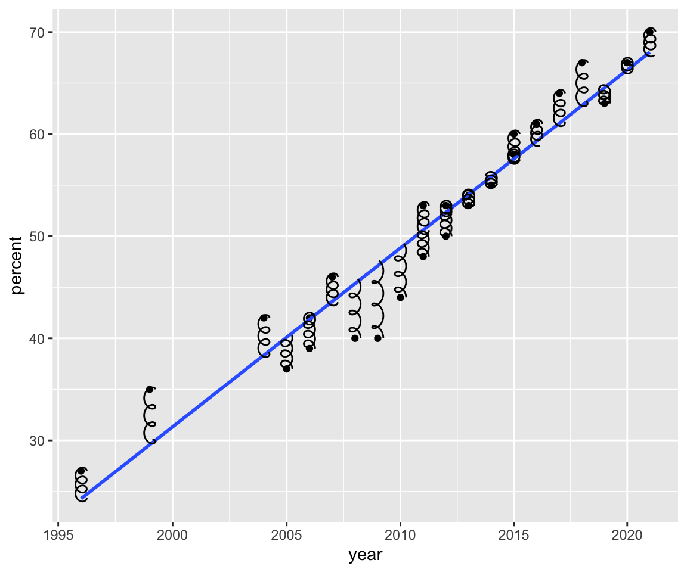
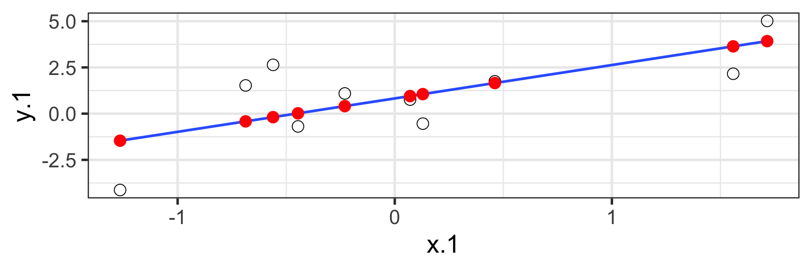
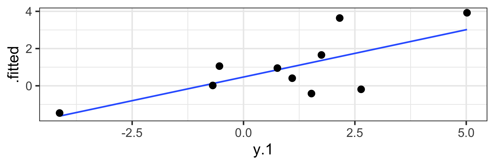

Univariate Regression
Part 2
Last time…
Introduction to univariate regression
- Explaination, prediction, adjustment
Calculation and interpretation of \(b_0\) and \(b_1\)
Relationship between \(X\), \(Y\), \(\hat{Y}\), and \(e\)
Gallup has been tracking support for same-sex marriage since 1996. They provide data for the percent of respondents who agree with the statement, “Do you think marriages between same-sex couples should or should not be recognized by the law as valid, with the same rights as traditional marriages?”
gallup = read_csv("https://raw.githubusercontent.com/uopsych/psy612/master/data/gallup_marriage.csv")
gallup %>% select(year, percent) %>% glimpse()Rows: 25
Columns: 2
$ year <dbl> 2021, 2020, 2019, 2018, 2017, 2016, 2015, 2015, 2014, 2013, 20…
$ percent <dbl> 70, 67, 63, 67, 64, 61, 58, 60, 55, 54, 53, 53, 50, 48, 53, 44…
Call:
lm(formula = percent ~ year, data = gallup)
Residuals:
Min 1Q Median 3Q Max
-7.0826 -2.3289 0.4248 2.4199 5.4051
Coefficients:
Estimate Std. Error t value Pr(>|t|)
(Intercept) -3466.1878 210.5071 -16.47 0.0000000000000319 ***
year 1.7488 0.1047 16.71 0.0000000000000234 ***
---
Signif. codes: 0 '***' 0.001 '**' 0.01 '*' 0.05 '.' 0.1 ' ' 1
Residual standard error: 3.209 on 23 degrees of freedom
Multiple R-squared: 0.9239, Adjusted R-squared: 0.9206
F-statistic: 279.1 on 1 and 23 DF, p-value: 0.00000000000002344Rows: 25
Columns: 8
$ percent <dbl> 70, 67, 63, 67, 64, 61, 58, 60, 55, 54, 53, 53, 50, 48, 53,…
$ year <dbl> 2021, 2020, 2019, 2018, 2017, 2016, 2015, 2015, 2014, 2013,…
$ .fitted <dbl> 68.06776, 66.31899, 64.57022, 62.82146, 61.07269, 59.32393,…
$ .resid <dbl> 1.93224379, 0.68100953, -1.57022472, 4.17854103, 2.92730678…
$ .hat <dbl> 0.14470548, 0.12465952, 0.10674157, 0.09095165, 0.07728975,…
$ .sigma <dbl> 3.250688, 3.277393, 3.261890, 3.145209, 3.216093, 3.260170,…
$ .cooksd <dbl> 0.03586103820, 0.00366372785, 0.01601579081, 0.09331068531,…
$ .std.resid <dbl> 0.65109113, 0.22683099, -0.51773909, 1.36574269, 0.94967121…
Least squares as springs
Code
#this contains code to create functions building spring geoms
source("https://raw.githubusercontent.com/uopsych/psy612/master/lectures/functions/spring_geom.R")
model_info %>% ggplot(aes(x = year, y = percent)) +
geom_point() +
scale_x_log10() +
geom_smooth(method = "lm", se = F) +
geom_spring(aes(xend = year, yend = .fitted,
tension = abs(.resid)),
diameter = .25) +
scale_tension_continuous(range = c(.1, 2)) +
guides(tension = "none")
See demo here too.
Loftus (2020, Nov. 23). Neurath’s Speedboat: Least squares as springs. Retrieved from http://joshualoftus.com/posts/2020-11-23-least-squares-as-springs/
Today…
Statistical inferences with regression
Partitioning variance
Testing \(b_{xy}\)
Statistical Inference
The way the world is = our model + error
How good is our model? Does it “fit” the data well?
To assess how well our model fits the data, we will examine the proportion of variance in our outcome variable that can be “explained” by our model.
To do so, we need to partition the variance into different categories. For now, we will partition it into two categories: the variability that is captured by (explained by) our model, and variability that is not.
Partitioning variation
Let’s start with the formula defining the relationship between observed \(Y\) and fitted \(\hat{Y}\):
\[Y_i = \hat{Y}_i + e_i\]
One of the properties that we love about variance is that variances are additive when two variables are independent. In other words, if we create some variable, C, by adding together two other variables, A and B, then the variance of C is equal to the sum of the variances of A and B.
Why can we use that rule in this case?
Partitioning variation
\(\hat{Y}_i\) and \(e_i\) must be independent from each other. Thus, the variance of \(Y\) is equal to the sum of the variance of \(\hat{Y}\) and \(e\).
\[\large s^2_Y = s^2_{\hat{Y}} + s^2_{e}\]
Recall that variances are sums of squares divided by N-1. Thus, all variances have the same sample size, so we can also note the following:
\[\large SS_Y = SS_{\hat{Y}} + SS_{\text{e}}\]
And each of these values can be rewritten as the sum of squared deviations:
\[\large \sum (Y - \bar{Y})^2 = \sum (\hat{Y} -\bar{Y})^2 + \sum(Y - \hat{Y})^2\]
A quick note about terminology: I demonstrated these calculations using \(Y\), \(\hat{Y}\) and \(e\). However, you may also see the same terms written differently, to more clearly indicate the source of the variance…
\[ SS_Y = SS_{\hat{Y}} + SS_{\text{e}}\] \[ SS_Y = SS_{\text{Model}} + SS_{\text{Residual}}\]
The relative magnitudes of sums of squares provides a way of identifying particularly large and important sources of variability. Later, we can further partition \(SS_{\text{Model}}\) and \(SS_{\text{Residual}}\) into smaller pieces, which will help us make more specific inferences and increase statistical power.
Partitioning variance in Y
Consider the case with no correlation between X and Y
\[ \hat{Y} = \bar{Y} + r_{xy} \frac{s_{y}}{s_{x}}(X-\bar{X})\]
\[ \hat{Y} = \bar{Y}\]
To the extent that we can generate different predicted values of Y based on the values of the predictors, we are doing well in our prediction
\[ SS_Y = SS_{\text{Model}} + SS_{\text{Residual}}\]
Coefficient of Determination
\[\Large \frac{SS_{Model}}{SS_{Y}} = \frac{s_{Model}^2}{s_{y}^2} = R^2\]
\(R^2\) represents the proportion of variance in Y that is explained by the model.
\(\sqrt{R^2} = R\) is the correlation between the predicted values of Y from the model and the actual values of Y
\[\large \sqrt{R^2} = r_{Y\hat{Y}}\]


::: ::::
Example
Call:
lm(formula = percent ~ year, data = gallup)
Residuals:
Min 1Q Median 3Q Max
-7.0826 -2.3289 0.4248 2.4199 5.4051
Coefficients:
Estimate Std. Error t value Pr(>|t|)
(Intercept) -3466.1878 210.5071 -16.47 0.0000000000000319 ***
year 1.7488 0.1047 16.71 0.0000000000000234 ***
---
Signif. codes: 0 '***' 0.001 '**' 0.01 '*' 0.05 '.' 0.1 ' ' 1
Residual standard error: 3.209 on 23 degrees of freedom
Multiple R-squared: 0.9239, Adjusted R-squared: 0.9206
F-statistic: 279.1 on 1 and 23 DF, p-value: 0.00000000000002344[1] 0.9238716Example
The correlation between X and Y is:
Coefficient of Alienation
\(1-R^2\) is sometimes referred to as the coefficient of alienation. It represents the proportion of variance in Y that is unexplained by our model, or left over after accounting for X (and other predictors).
Note the relationship between the variation of Y and the variation of the residuals:
\[\frac{SS_{Model}}{SS_{Y}} = R^2\] \[SS_{Model} = R^2({SS_{Y})}\] \[SS_{residual} = SS_{Y} - R^2({SS_{Y})}\] \[SS_{residual} = {SS_{Y}(1- R^2)}\]
\[SS_{residual} = {SS_{Y}(1- R^2)}\]
also:
\[\large s^2_{residual} = {s^2_{Y}(1- R^2)}\] \[\large s_{residual} = {s_{Y}\sqrt{(1- R^2)}}\]
standard deviation of the residuals
Residuals carry information about where and how the model fails to fit the data. However, it’s important to note that residuals (like all other aspects of our data) are estimates.
In fact, residuals are latent variables as we do not directly observe them in our data collection but infer their presence and value from other data.
We can use residuals to estimate true score error. Note that this formula will look similar to (but differ from) the calculation of the standard deviation.
standard error of the estimate
- aka residual standard error
\[s_{Y|X} = \sqrt{\frac{SS_{\text{Residual}}}{df_{\text{Residual}}}} = \sqrt{\frac{\Sigma(Y_i -\hat{Y_i})^2}{N-2}}\]
interpreted in original units (unlike \(R^2\))
We interpret the standard error of the estimate to represent the spread of observed data around the regression line.
standard error of the estimate
Call:
lm(formula = percent ~ year, data = gallup)
Residuals:
Min 1Q Median 3Q Max
-7.0826 -2.3289 0.4248 2.4199 5.4051
Coefficients:
Estimate Std. Error t value Pr(>|t|)
(Intercept) -3466.1878 210.5071 -16.47 0.0000000000000319 ***
year 1.7488 0.1047 16.71 0.0000000000000234 ***
---
Signif. codes: 0 '***' 0.001 '**' 0.01 '*' 0.05 '.' 0.1 ' ' 1
Residual standard error: 3.209 on 23 degrees of freedom
Multiple R-squared: 0.9239, Adjusted R-squared: 0.9206
F-statistic: 279.1 on 1 and 23 DF, p-value: 0.00000000000002344standard error of the estimate
Note: these are not the same!
\(1-R^2\) and standard error of the estimate
two sides of same coin
one in original units (standard error of the estimate), the other standardized \((1-R^2)\)
Inferential tests
NHST is about making decisions:
- these two means are/are not different
- this correlation is/is not significant
- the distribution of this categorical variable is/is not different between these groups
In regression, there are several inferential tests being conducted at once. The first is called the omnibus test – this is a test of whether the model fits the data.
Omnibus test
Historically we use the F distribution to estimate the significance of our model, because it works with our ability to partition variance.
What is our null hypothesis?
The model does not account for variance in \(Y\).
But you can also think of the null hypothesis as
\[\Large H_{0}: \rho_{Y\hat{Y}}^2= 0\]
Code
data.frame(x = c(0, 5)) %>%
ggplot(aes(x = x)) +
stat_function(fun = function(x) df(x, df1 = 3, df2 = 10),
geom = "line", aes(color = "df1 = 3", linetype = "df2 = 10")) +
stat_function(fun = function(x) df(x, df1 = 1, df2 = 10),
geom = "line", aes(color = "df1 = 1", linetype = "df2 = 10")) +
stat_function(fun = function(x) df(x, df1 = 5, df2 = 10),
geom = "line", aes(color = "df1 = 5", linetype = "df2 = 10")) +
stat_function(fun = function(x) df(x, df1 = 3, df2 = 50),
geom = "line", aes(color = "df1 = 3", linetype = "df2 = 50")) +
stat_function(fun = function(x) df(x, df1 = 1, df2 = 50),
geom = "line", aes(color = "df1 = 1", linetype = "df2 = 50")) +
stat_function(fun = function(x) df(x, df1 = 5, df2 = 50),
geom = "line", aes(color = "df1 = 5", linetype = "df2 = 50")) +
scale_y_continuous("density")+
theme_bw(base_size = 20)F Distribution review
The F probability distribution represents all possible ratios of two variances:
\[F \approx \frac{s^2_{1}}{s^2_{2}}\]
F Distribution review
Each variance estimate in the ratio is \(\chi^2\) distributed, if the data are normally distributed. The ratio of two \(\chi^2\) distributed variables is \(F\) distributed. It should be noted that each \(\chi^2\) distribution has its own degrees of freedom.
\[F_{\nu_1\nu_2} = \frac{\frac{\chi^2_{\nu_1}}{\nu_1}}{\frac{\chi^2_{\nu_2}}{\nu_2}}\]
As a result, F has two degrees of freedom, \(\nu_1\) and \(\nu_2\)
F Distributions and regression
Recall that when using a z or t distribution, we were interested in whether one mean was equal to another mean – sometimes the second mean was calculated from another sample or hypothesized (i.e., the value of the null). In this comparison, we compared the difference of two means to 0 (or whatever our null hypothesis dictates), and if the difference was not 0, we concluded significance.
F statistics are not testing the likelihood of differences; they test the likelihood of ratios. In this case, we want to determine whether the variance explained by our model is larger in magnitude than another variance.
Which variance?
\[\Large F_{\nu_1\nu_2} = \frac{\frac{\chi^2_{\nu_1}}{\nu_1}}{\frac{\chi^2_{\nu_2}}{\nu_2}}\]
\[\Large F_{\nu_1\nu_2} = \frac{\frac{\text{Variance}_{\text{Model}}}{\nu_1}}{\frac{\text{Variance}_{\text{Residual}}}{\nu_2}}\]
\[\Large F = \frac{MS_{Model}}{MS_{residual}}\]
The degrees of freedom for our model are
\[DF_1 = k\] \[DF_2 = N-k-1\]
Where k is the number of IV’s in your model, and N is the sample size.
Mean squares are calculated by taking the relevant Sums of Squares and dividing by their respective degrees of freedom.
\(SS_{\text{Model}}\) is divided by \(DF_1\)
\(SS_{\text{Residual}}\) is divided by \(DF_2\)
Call:
lm(formula = percent ~ year, data = gallup)
Residuals:
Min 1Q Median 3Q Max
-7.0826 -2.3289 0.4248 2.4199 5.4051
Coefficients:
Estimate Std. Error t value Pr(>|t|)
(Intercept) -3466.1878 210.5071 -16.47 0.0000000000000319 ***
year 1.7488 0.1047 16.71 0.0000000000000234 ***
---
Signif. codes: 0 '***' 0.001 '**' 0.01 '*' 0.05 '.' 0.1 ' ' 1
Residual standard error: 3.209 on 23 degrees of freedom
Multiple R-squared: 0.9239, Adjusted R-squared: 0.9206
F-statistic: 279.1 on 1 and 23 DF, p-value: 0.00000000000002344Mean square error (MSE)
AKA mean square residual and mean square within
unbiased estimate of error variance
- measure of discrepancy between the data and the model
the MSE is the variance around the fitted regression line
Note: it is a transformation of the standard error of the estimate (and residual standard error)!
Next time…
Even more univariate regression!
Confidence intervals
Confidence and prediction bands
Model comparison